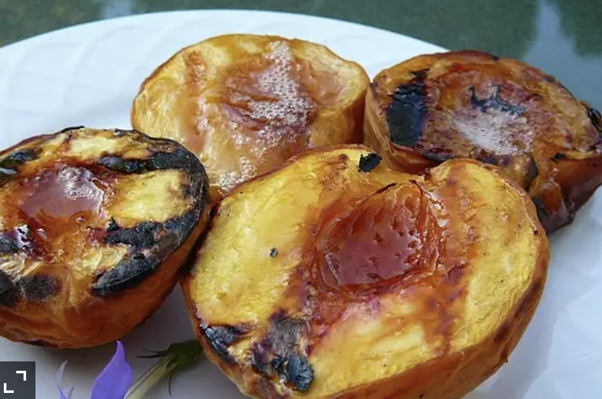

Sweet Grilled Peaches

Sweet Grilled Peaches recipe:
Fun and healthy snack!
Nutrition Facts:
Per Serving: 244 calories; protein 1g; carbohydrates 64.9g; fat 0.2g; sodium 8.9mg. Full Nutrition
Ingredients:
- 1 (16 ounce) package frozen peach slices
- ½ cup honey
- 2 tablespoons cinnamon
Steps:
- Preheat a grill for medium heat.
- Place peaches onto a large piece of aluminum foil. Use two if necessary to hold in all of the peaches without spillage. Drizzle the honey over the peaches, and sprinkle with cinnamon. Close up the foil, sealing tightly.
- Place the foil packet onto the preheated grill, and cook for 10 minutes, turning once halfway through. Carefully open the packet, and serve.